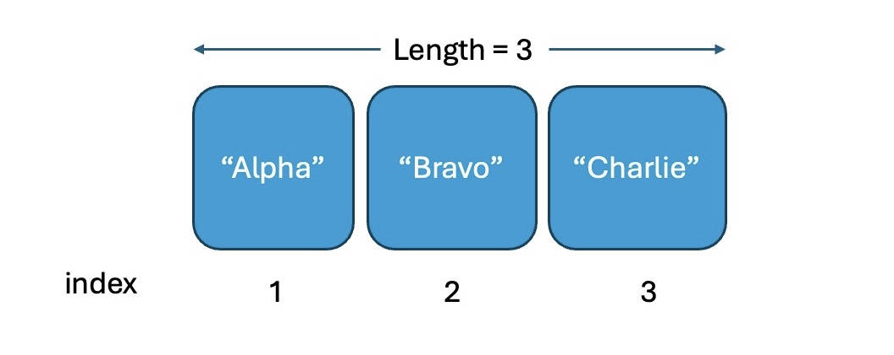
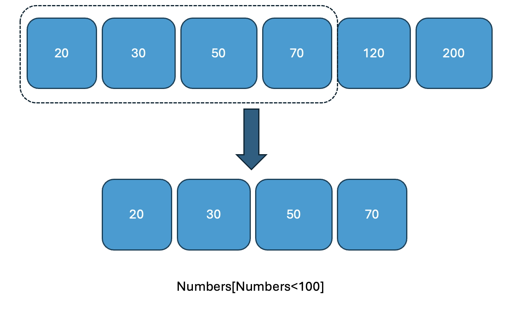

Welcome
Hello, and welcome to Language of Data and R Basics!
In this tutorial we will take you through concepts and R code that are essential for getting started with data analysis. This tutorial is one of the two preparation tutorials for Lab 2, where you will classify variables, inspect data, and begin transforming data in R.
Scientists seek to answer questions using rigorous methods and careful observations. These observations form the backbone of a statistical investigation and are called data. Statistics is the study of how best to collect, analyze, and draw conclusions from data. It is helpful to put statistics in the context of a general process of investigation:
Step 1: Identify a question or problem.
Step 2: Collect relevant data on the topic.
Step 3: Analyze the data.
Step 4: Form a conclusion.
We will focus on steps 1 and 2 of this process in this tutorial.
Our learning goals for the tutorial are to internalize the language of data, load and view a dataset in R and distinguish between various variable types, classify a study as observational or experimental, and determine the scope of inference, distinguish between various sampling strategies, and identify the principles of experimental design.
This tutorial does not assume any previous R experience, but if you would like an introduction to R first, we recommend the RStudio Primers or the R Bootcamp.
Packages
Packages are the fundamental units of reproducible R code. They include reusable functions, the documentation that describes how to use them, and sample data. In this lesson we will make use of two packages:
- tidyverse: Tidyverse is a collection of R packages for data science that adhere to a common philosophy of data and R programming syntax, and are designed to work together naturally. You can learn more about tidyverse here. But no need to go digging through the package documentation, we will walk you through what you need to know about these packages as they become relevant.
- openintro: The openintro package contains datasets used in openintro resources. You can find out more about the package here.
Once we have installed the packages, we use the
library() function to load packages into R.
Let’s load these two packages to be used in the remainder of this lesson.
library(tidyverse)
library(openintro)R is a calculator: basic operations
Basic math operations in R can be used as the following.
+: add
- : substract
* : multiply
/ : divide
^ or **: exponentiation
For example,
\((\frac{12}{24})^2\) can be obtained by
(12/24)^(2) # divide 12 by 24, then square the result
(12/24)**(2) # alternative exponentiation operatorAssign values to a variable
Let’s say if you want to save 10 to variable A. You can
do the following command.
A <- 10
A = 10 # '=' doesn't mean equal sign. It is the same as `<-` operatorNote: The # symbol is used to write comments in R
code.
And you can check what value the variable A has by
calling it or using print() function
A # calling the variable will display its value
print(A) # explicitly print the value of the variableStrings (character type)
You need to put either single quote or double quotes before and after the string (text) type values.
s1 <- "Hello, world!" # double quotes
s2 <- 'R is great' # single quotes also work
s1
s2Concatenate strings
You can concatenate the strings using paste() or
paste0() functions.
greeting <- paste("Hello", "world", sep = ", ")
greeting
greeting2 <- paste0("Hello", "world") # paste0 has no separator argument needed. But there is no values in between.
greeting2Assign values to a vector
You can assign multiple values to a vector.
GPA <- c(3.2, 3.7, 3.9, 2.3, 2.7)
FirstName <- c("Tom", "Sarah", "Nick", "Amy", "John")
GPA
FirstNameThere are some useful functions for a vector
seq(from=a, to=b, by=c): this generates a sequence vector from value a to b by c increment.rep(x, times = n): this replicate elementxfor n times.length(x): this will give you the length of vectorx
You can make a vector by using those functions.
For example,
my_vector = seq(1, 10, 2)
my_vectoranother_vector = 1:10
another_vectorvector3 = rep("BU", 25)
vector3Variable Type Checkpoint
Before working with more data objects, pause to identify the type of data R would use to store each value.
- numeric values are numbers that can be used in calculations.
- character values are text values, usually written inside quotation marks.
- logical values are
TRUEorFALSE. - factor values store group labels with a fixed set of possible categories.
For each variable below, write whether R should store it as numeric, character, logical, or factor.
Reading and Fixing an Error
Errors are part of using R. The useful habit is to read the message, find the location of the problem, and make a small correction.
Run the code below. Then fix it so R creates and prints the vector.
broken_numbers <- c(2, 4, 6, 8
broken_numbers# Check whether every opening parenthesis has a matching closing parenthesis.Your turn!
Assign numeric value 655 to the variable named number
and print it
variable_name <- valuevariable_name = value # This also worksAssign the following value to a vector some_numbers and
print it.
1, 3, 5, 7, 9, 11
# Try seq(); it is the number from 1 to 11 increasing by 2.Accessing vector elements
Each element in a vector is associated with index number. The index in R starts from 1 as the first item.
For example,
#
SomeNames <- c("Alpha", "Bravo", "Charlie")
SomeNames
For example,
You can access the third element of SomeNames by
SomeNames[3] .
You can also access, for example, the second and the third elements
by SomeNames[2:3] .
SomeNames <- c("Alpha", "Bravo", "Charlie")
print(SomeNames[3]) # third element
print(SomeNames[2:3]) # second and third elementsSubset vectors
Vectors can be subsetted using condition
x[condition]the conditional statements (condition) you can use could be
x == 20 # x equals to 20
x < 100
x <= 100
x > 100
x >= 100
x != 100 # x not equal to 100For example, you can return all the numbers less than 100
Numbers <- c(20, 30, 50, 70, 120, 200)
Numbers[Numbers < 100] 
Your turn!
Assign the following value to a vector numbers and
print it.
10, 20, 30, 40, 50, 60
# Try seq(); it is the number from 10 to 11 increasing by 2.From numbers object, print the numbers that are less
than 40.
# the condition is
numbers < 40# You can put the condition within the numbers with square bracketsSubmit